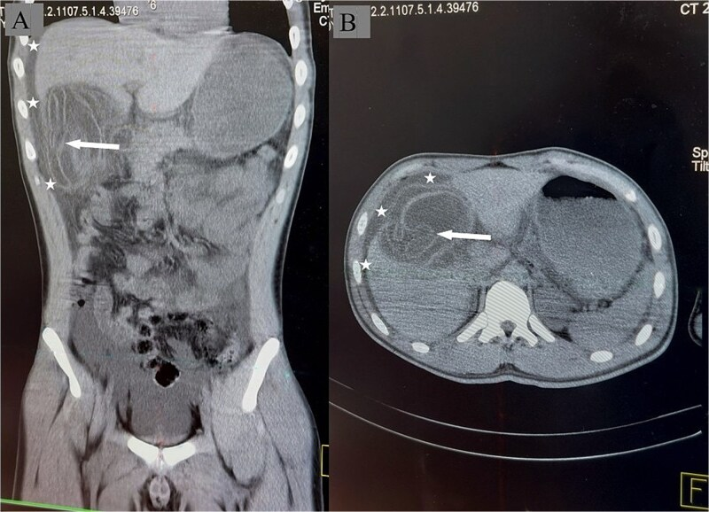

Тема 1
Абсцесс и гангрена лёгкого. Бронхоэктатическая болезнь
Чем абсцесс отличается от гангрены и от бронхоэктатической болезни, чем они кончаются, что видно на снимке и когда нужен хирург.
Разобранные темы по нескольким учебникам сразу.
Чем абсцесс отличается от гангрены и от бронхоэктатической болезни, чем они кончаются, что видно на снимке и когда нужен хирург.

Эмпиема плевры: откуда берётся гной в плевральной полости, какими бывают осумкованные формы, чем грозит прорыв, когда хватает дренажа и когда нужна операция.

Рак лёгкого: чем центральная форма отличается от периферической, почему она даёт кашель и ателектаз, как выглядит синдром верхней полой вены, чем подтверждают диагноз и какие операции делают.

Заболевания артерий: почему обрывается кровоток, откуда берутся эмболы, чем отличается тромбоз от эмболии, как выглядит острая ишемия и когда счёт идёт на часы.

Заболевания вен нижних конечностей: почему клапаны перестают держать, как варикоз доходит до трофической язвы, что показывают функциональные пробы и когда вену удаляют.

Тромбофлебит и тромбоз глубоких вен: чем поверхностный тромбофлебит отличается от тромбоза, зачем смотрят сафено-феморальное соустье, как выглядит несжимаемая вена на УЗИ и что такое посттромбофлебитический синдром.

Грыжи живота: из чего состоит грыжа, чем паховая отличается от бедренной, что происходит при ущемлении и почему мнимое вправление опаснее самого ущемления.

Рак пищевода и желудка: предраковые состояния, как опухоль прорастает в соседние органы, куда даёт метастазы и какие операции делают.

Заболевания печени и портальная гипертензия: эхинококкоз, абсцессы, анатомия воротной вены, формы блока, кровотечения из варикозных вен и их лечение.

Острый панкреатит: этиология, патогенез, формы, инструментальная диагностика, консервативное и хирургическое лечение.

Желчнокаменная болезнь и острый холецистит: камнеобразование, клиника, диагностика, осложнения и холецистэктомия.

Заболевания прямой кишки: анатомия и методы исследования, геморрой, трещина, парапроктит, полипы и рак прямой кишки.

Кишечная непроходимость: классификация, обтурационная, странгуляционная и спаечная формы, инвагинация, клиника и рентгенодиагностика.

Аппендицит и осложнения острого аппендицита: анатомия отростка, клиника, атипичные формы, диагностика, аппендэктомия, инфильтрат, абсцессы, перитонит, пилефлебит.

Болезнь оперированного желудка: демпинг-синдромы, синдром приводящей петли, рефлюкс-гастрит и их лечение.

Язвенная болезнь желудка и двенадцатиперстной кишки с хирургической стороны: патогенез, классификация Джонсона, диагностика, синдром Золлингера — Эллисона и осложнения — кровотечение, перфорация, пенетрация и стеноз.
Вопросы к каждой теме: с выбором ответа и открытые.
Список вопросов к экзамену по предмету.
Пока пусто.
Учебники и книги по предмету.